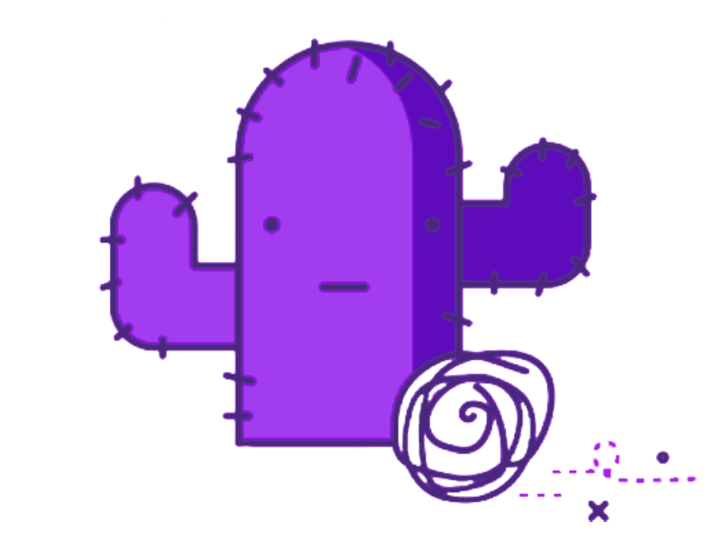

<ion-header mode="md" >
  <ion-toolbar mode="md" color="primary">
    <ion-buttons slot="start">
      <ion-button (click)="close()" mode="md">
        <ion-icon name="arrow-back-outline" style="font-size: 1.8rem!important;"></ion-icon>
      </ion-button>
    </ion-buttons>
    <ion-title class="ion-text-center">Interested Events</ion-title>
    <div slot="end" style="width: 48px"></div>
  </ion-toolbar>
</ion-header>

<ion-content class="ion-padding">
  <ion-refresher slot="fixed" (ionRefresh)="doRefresh()" class="refresher-custom">
    <ion-refresher-content >
    </ion-refresher-content>
  </ion-refresher>
  <ion-list class="event-list" *ngIf="events.length > 0; else noRecordsTemplate">
    <ng-container *ngFor="let item of events">
      <ion-item (click)="onOpenTicket(item)" [detail]="true" [button]="true" class="ion-no-padding">
        <ion-avatar aria-hidden="true" slot="start">
          
        </ion-avatar>
        <ion-label >
          <h2 class="desc">
            <strong>{{item.eventName}}</strong>
          </h2>
          <h3 class="sub-title">{{ item.eventDesc}}</h3>
        </ion-label>
        <ion-note slot="end">
          <h5 >{{ item.eventType}}</h5>
        </ion-note>
      </ion-item>
    </ng-container>
  </ion-list>
  
  <ion-button load-more fill="clear" *ngIf="!isLoading && total > events.length" (click)="loadMore()">
    <ion-icon slot="start" name="chevron-down-outline"></ion-icon>
    Load more
  </ion-button>

  <ng-template #noRecordsTemplate>
    <div>
      <div style="background-color: #8469c726;display: flex;flex-direction: column;align-items: center;padding-bottom: 20px;border-radius: 10px; position: relative;text-align: center;" >
        
        <div >
          <h2>No interested events to show</h2>
        </div>
      </div>
    </div>
  </ng-template>
</ion-content>